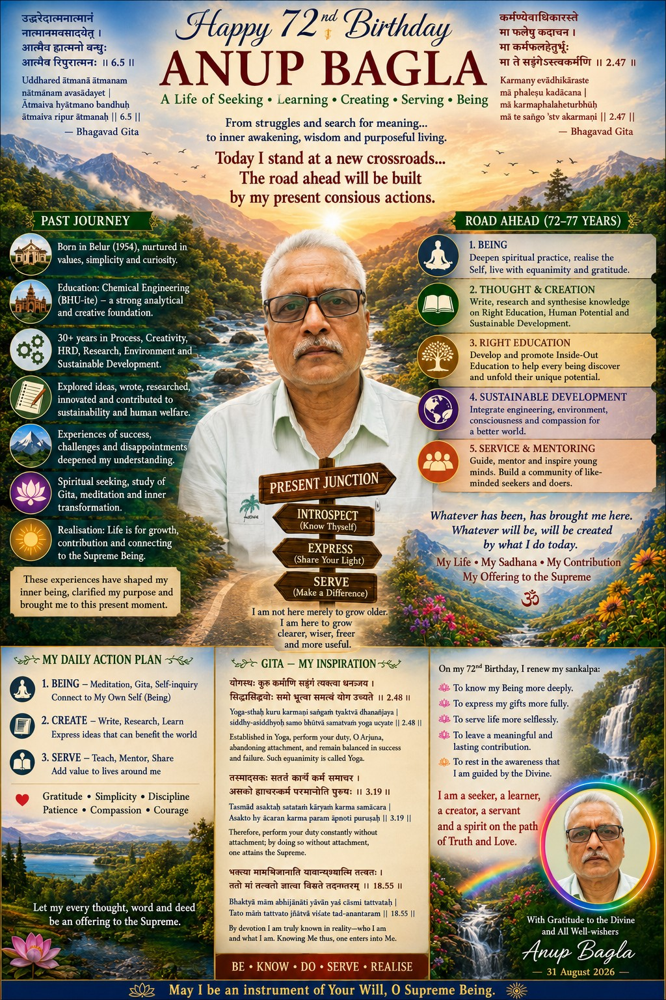

My journey—from chemical and process engineering through creativity, energy, environment and sustainability, to human development, education and consciousness—has led me to one continuing inquiry:
My work increasingly brings together fields that are often treated separately: engineering and human development, process and creativity, sustainability and education, outer progress and inner development.
Helping people discover and develop their natural abilities, thinking, creativity and potential.
ExploreConnecting process, energy, environment, technology and human responsibility for more sustainable development.
ExploreExploring consciousness, values, self-awareness, harmony, meaningful action and human transformation.
Explore“To help human beings and human systems evolve from the inside out—by awakening their inherent potential, creativity, understanding and consciousness, and by applying these capacities to build a more humane, sustainable and meaningful world.”
Research · Writing · Dialogue · Mentoring · Educational initiatives · Project initiatives · Collaboration
Right Education & Human PotentialCreativity, Thinking & InnovationHuman, Social & Sustainable DevelopmentResearch, Writing & DialogueInner Development & Consciousness
On 31 August 2026, I used my 72nd birthday as a point of reflection: to look back at the journey, recognise the present junction, and renew a commitment to conscious action, research, creation, service and inner development.
View the full reflectionFor thoughtful conversations, research, mentoring, education, sustainability and future initiatives.
Email me anup.bagla@definedvalues.org